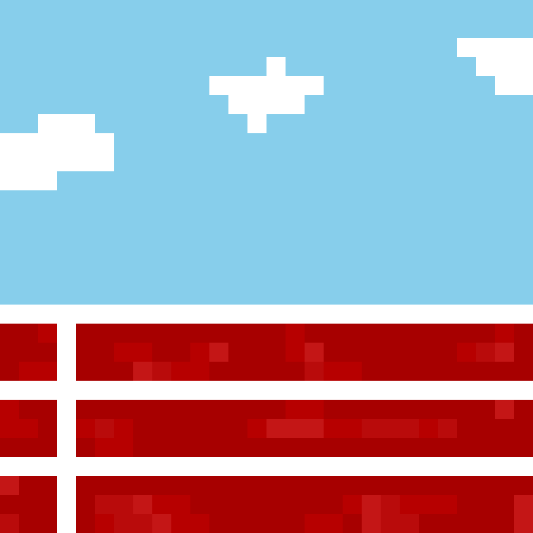

<html lang="en"></html>
<head>
    <meta charset="UTF-8">
    <meta name="viewport" content="width=device-width, initial-scale=1.0">
    <title>Milestones</title>
    <link rel="stylesheet" href="../css/menu.css">

    
    <script src="../js/global.js"></script>

    <link rel="preconnect" href="https://fonts.googleapis.com">
    <link rel="preconnect" href="https://fonts.gstatic.com" crossorigin>
    <link href="https://fonts.googleapis.com/css2?family=Sixtyfour+Convergence&display=swap" rel="stylesheet">

    <link rel="stylesheet" href="https://stackpath.bootstrapcdn.com/bootstrap/4.5.2/css/bootstrap.min.css">

    <link rel="stylesheet" href="../css/general.css">

</head>
<body>
    <h1>Milestones</h1>
    <div id="includeNav" navFile="../navbar.html"></div>
    

        <!-- Milestones slideshow -->
        <div id="carouselExampleControls" class="carousel slide" data-ride="carousel">
            <div class="carousel-inner">
              <div class="carousel-item active">
                
                <p>Track</p>
              </div>
              <div class="carousel-item">
                
                <p>Road</p>
              </div>
              <div class="carousel-item">
                
                <p>Grass</p>
              </div>
            </div>
            <a class="carousel-control-prev" href="#carouselExampleControls" role="button" data-slide="prev">
              <span class="carousel-control-prev-icon" aria-hidden="true"></span>
              <span class="sr-only">Previous</span>
            </a>
            <a class="carousel-control-next" href="#carouselExampleControls" role="button" data-slide="next">
              <span class="carousel-control-next-icon" aria-hidden="true"></span>
              <span class="sr-only">Next</span>
            </a>
        </div>

          <script src="https://code.jquery.com/jquery-3.5.1.slim.min.js"></script>
          <script src="https://cdn.jsdelivr.net/npm/@popperjs/core@2.9.2/dist/umd/popper.min.js"></script>
          <script src="https://stackpath.bootstrapcdn.com/bootstrap/4.5.2/js/bootstrap.min.js"></script>
      
          <script>
            $('.carousel').carousel({
              interval: false // stop the carousel from auto rotating
            });
        </script>
      

    
</body>
</html>